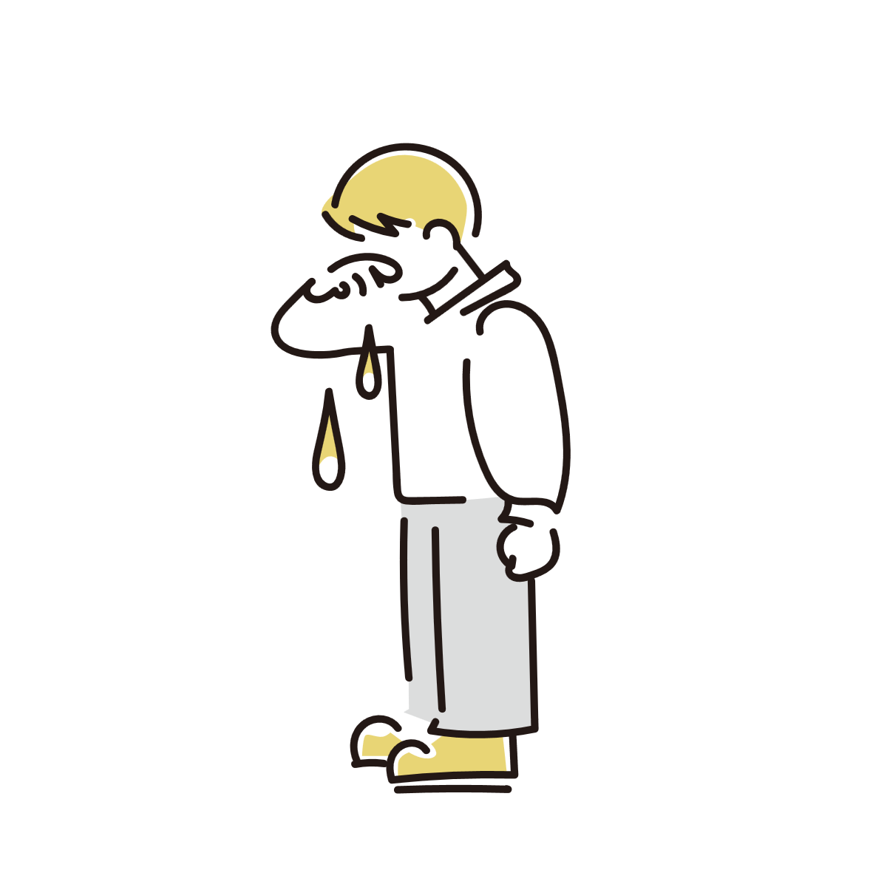

熱が出ると涙が出るのはなぜ？
風邪や高熱が出ているとき、目がしょぼしょぼしたり、勝手に涙が出てきたりすることがあります。
「泣いているわけではないのに涙が止まらない」「目が潤みすぎて不快」と感じて不安になることも。
これは感情とは関係なく、主に「目の乾燥」や「自律神経の乱れ」といった発熱時の体の反応として起こることが多い現象です。
ただし、実際に「悲しい感情」が引き起こされて涙が流れるケースもあります。

涙は「感情だけ」で出ているわけではない
涙というと「悲しいときに出るもの」という印象がありますが、実際にはそれだけではありません。
目の表面を守るために常に少量の涙が分泌されており、異物や乾燥に反応して増える仕組みがあります。
つまり涙は、目を保護するための「自動調整機能」のような役割も持っています。
発熱や風邪のときは「目や鼻」が乾燥しやすくなる
風邪や発熱のときは、鼻や喉の粘膜に炎症が起きています。
この炎症によって鼻づまりや乾燥が起きると、目の環境も影響を受けやすくなります。
特に空気の流れが悪くなると、目の表面が乾きやすくなり、結果として涙の分泌が増えることがあります。
これは「目が乾いているから涙で潤いを与えよう」という自然な反応です。

発熱による自律神経の乱れが涙を増やす原因に
発熱時には自律神経のバランスが変化し、涙の分泌が過敏になることがあります。
発熱や体力の消耗によって自律神経が乱れると、涙腺のコントロールがうまくいかなくなり、普段よりも涙が出やすい状態になります。
また、目や鼻の粘膜は密接につながっているため、風邪などで鼻や喉の炎症が起きると、その刺激が神経を伝わって涙の分泌を増やす原因にもなります。こうした全身の神経反応が、発熱時の涙を引き起こす一因となっています。
「目の病気」ではなく一時的な反応のことが多い
涙は単なる不快な症状ではなく、目を守るための仕組みでもあります。
乾燥や刺激から目の表面を守るために分泌が増えることで、結果的に涙があふれて見えることがあります。
つまり、体が「目を守ろうとしている状態」とも言えます。
発熱に伴う涙は、基本的には体調が戻るにつれて自然に落ち着いていきます。
そのため、多くの場合は目そのものの病気というより、全身状態の変化に伴う一時的な反応であるため、慌てず落ち着いて受け止めることが必要です。
涙が出るのは「感情」が関係していることもある
発熱に伴う涙は、目や鼻の炎症、自律神経の乱れといった生理的な原因によるものが基本ですが、中には「悲しい感情」が引き金となって涙が出るケースもあります。
これは、ウイルスや細菌と戦うために免疫系が活発化し、脳の神経伝達物質に影響を与えることが主な仕組みです。 免疫反応の過程で放出される「サイトカイン」という物質が脳の感情調整エリアに働きかけることで、セロトニンやドーパミンといった気分を調整する神経伝達物質の働きを低下させ、 結果として気分が落ち込んだり不安感が増したりする状態が一時的に生じます。
さらに、高熱や身体の痛み、睡眠不足によって脳の司令塔である前頭葉のエネルギーが枯渇し、感情をコントロールするブレーキ機能が低下することも重なります。 その結果、些細なことでも過敏に受け止めたり、強烈な無力感や心細さを覚えたりして、精神的な涙が溢れ出ることがあります。
このように、発熱時の涙には身体的な防衛反応だけでなく、免疫や脳の疲弊を通じた「感情的なメカニズム」が関係している場合もあります。
このケースでも、熱が下がっていくにつれて悲しい感情も自然に治まっていくので、落ち着いて対処してください。

⚠受診を考えたほうがよいケース
発熱時の涙は一般的な反応ですが、以下のような場合は注意が必要です。
目の強い痛み、膿のような分泌物、急な視力低下、片目だけ強く症状が出るケース、熱が下がった後も長期間にわたって強い抑うつ状態や悲しさが続く場合などです。
こうした場合は、単なる風邪とは別の原因が隠れていることもあります。
参考情報と注意点
涙の増加にはさまざまな原因があります。症状が長引く場合や強い痛みがある場合は医療機関への相談も検討してください。
関連アイテム
 | 経口補水液 ◆大塚製薬オーエスワン（OS-1) 500mlx24本 価格:4045円 |